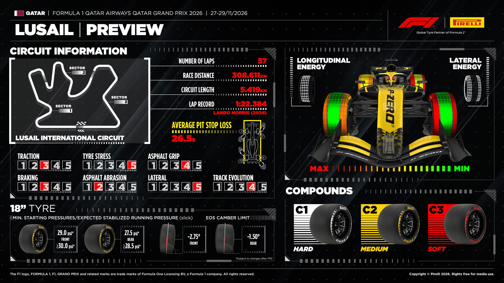
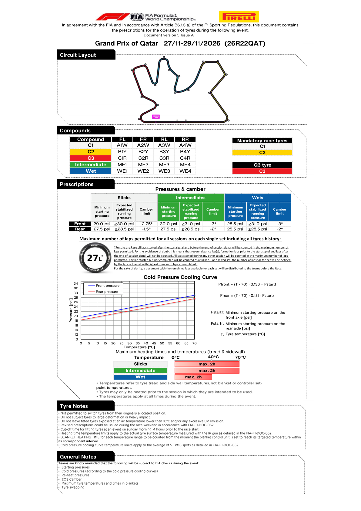

Tyres & Strategy
Compound allocation, degradation and the strategic shape of the race.
Race tyre availability
No verified pre-race set inventory has been collected for this weekend. These charts normally appear after qualifying, not with the earlier compound nomination. A missing chart is not proof of non-publication, and no zero counts or FastF1-derived inventory are substituted.
Source discovery checked 2026-11-26T04:51:02+00:00.
FIA official tyre documents
Official source; curated transcription may await review. Linked PDFs are the authority. Discovery does not extract or verify numeric values, and does not replace the curated material below.
Last successful FIA document discovery: 2026-11-26T04:50:15.315865+00:00. This is retrieval time, not issue time; newer revisions may exist.
What this circuit does to a tyre
Sustained high-speed loading puts the front-left under particular stress. For 2026, Pirelli announced a 27-lap maximum stint per set in agreement with the FIA, making the scheduled 57-lap race a minimum two-stop event. The reviewed Pirelli preview confirms the C1/C2/C3 nomination, mandatory sets and event prescriptions; the conflicting Formula1.com set-allocation reports are not a post-qualifying remaining-set chart.
Why it matters here
Moderate. The main straight offers a genuine chance, but the flowing middle sector makes following closely difficult and rewards clean air.
Where passing is hard, strategy and the undercut decide the race; where it is easy, teams can afford to run longer and recover track position on merit.



Qatar compounds and 27-lap tyre-set limit
Pirelli nominated C1 Hard, C2 Medium and C3 Soft for Qatar. Its 13 November graphic marks C3 as the qualifying mandatory set and C1 and C2 as the race mandatory sets. This nomination is not a driver-by-driver remaining-set inventory.
Two Formula1.com articles published on 25 November give different per-driver slick allocations. Its 10:05 UTC tyre guide says two C1 Hard, three C2 Medium and eight C3 Soft sets, and says an extra Soft is reserved for drivers reaching Q3. The 10:43 UTC explainer instead says each driver gets 13 sets: two C1 Hard, four C2 Medium and seven C3 Soft. Pirelli's 24 November release confirms the compounds but does not state these per-driver totals, so the exact allocation is conflicting and remains unresolved here. Formula1.com also says a dry race requires two different slick compounds. These are allocation reports, not post-qualifying remaining-set counts. Formula1.com tyre guide, 10:05 UTC · Formula1.com explainer, 10:43 UTC.
On 24 November, Pirelli announced a maximum 27-lap stint per set, agreed with the FIA, and said the race will require at least two stops. At the full scheduled 57-lap distance, two sets cover only 54 laps. The FIA's Qatar competition notes (Doc 2, page 2) independently specify the same 27-lap limit; the document and its screenshot are linked below. Pirelli's official Qatar tyre briefing, 24 November.
Formula1.com's 25 November explainer quotes Pirelli's counting details: the 27-lap maximum is cumulative across sessions, including Safety Car and Virtual Safety Car laps; all race laps from the start signal to the chequered flag count. In other track sessions, a lap started but not completed counts as a full lap, and a set assembled from tyres with different mileage takes the higher mileage. Reconnaissance, formation and post-race laps are excluded. This report is consistent with the separately reviewed 27-lap FIA/Pirelli Qatar prescription. Formula1.com, 25 November explainer.
The FIA's official Qatar competition notes (Doc 2, page 2) specify slick minimum starting / expected stabilized running pressures of 29.0 / >=30.0 psi at the front and 27.5 / >=28.5 psi at the rear, with camber limits of -2.75 degrees front and -1.50 degrees rear. The same FIA sheet sets C1 and C2 as mandatory race tyres, C3 as the Q3 tyre, and caps each set at 27 laps across all sessions and tyre history. Pirelli's separate 24 November event infographic shows the same pressure figures, marks them subject to change after FP2, and lists an average pit-stop loss of 26.5 seconds; do not present that as a stationary wheel-change duration. These event prescriptions do not resolve the conflicting Formula1.com reports of driver-by-driver set allocations. FIA Competition Notes - Pirelli Preview, page 2 · Pirelli's official Qatar tyre briefing, 24 November.
Pirelli F1 chief engineer Simone Berra's earlier Motorsport.com interview adds details about session-by-session tyre use and remaining allowances after Saturday running. Motorsport.com report and Berra interview, 20 November. Coffee Corner Motorsport's independent 24 November preview says practice and qualifying laps consume each set's allowance. Coffee Corner Motorsport, Qatar tyre preview · Pirelli compound selection and graphic, 13 November.
Two-stop examples — not a prediction
For a full 57-lap dry race, a fresh Medium / fresh Hard / fresh Medium could stop after laps 19 and 38: three 19-lap race stints. An early Safety Car stop after lap 7 could instead be followed by a stop after lap 34: 7 / 27 / 23 laps, if each set has enough allowance left. These are arithmetic examples, not measured optimum windows or a claim that those sets remain available. A shortened race, Safety Car, rain, tyre wear or a changed rule can alter the plan; a dry race also requires two different slick compounds.
Each set's earlier session use reduces its remaining allowance. Formula1.com's 25 November explainer reports that all race laps from the start signal to the chequered flag count; in other sessions, a started but unfinished lap counts in full, and mixed-mileage sets take the higher tyre mileage. Reconnaissance, formation and post-race laps are excluded. These are the reported Pirelli counting rules and match the reviewed FIA/Pirelli event prescription; use post-Saturday official remaining-lap information before applying either example. Formula1.com counting-rule explainer · Coffee Corner Motorsport counting report · Pirelli engineer on remaining laps.
Official FIA document screenshots
Automatically rendered from the official PDFs. These figures do not update or verify the curated numeric transcriptions above. Unchanged pages already illustrated above are not repeated here.
2026_qatar_grand_prix_-_competition_notes_-_pirelli_preview.pdf
PDF retrieved 2026-11-26T04:50:17+00:00; this is not its issue date.
